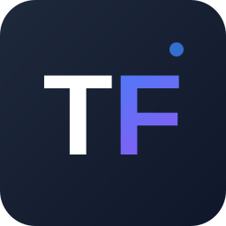

TransformerFacts（简称 TF数据官） 是一套聚焦 AI 产业真实落地节奏的先行指标监测与深度研究体系。 它不预测股价，而是用可量化、可回溯、可对比的先行指标，识别 AI 产业的周期拐点、供需结构变化、 算力通胀风险与就业结构变迁，为产业研究、投资决策与技术落地提供客观、前置、可落地的数据支撑。
EAPI（Enterprise AI Penetration Index）追踪企业在实际业务中引入 AI 工具的渗透速度，采用 npm 六包体系： AI SDK 三包（OpenAI / Anthropic / Google）权重 60%，企业工具三包（dd-trace / snowflake-sdk / Atlassian Triggers）权重 40%， 几何加权合成，捕捉企业从"试用模型"到"深度集成"的完整渗透路径。